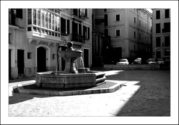

Fuente de la plaza
La Plaza de Sant Jeroni
En esta pequeña plaza se encuentra la casa en la que en el siglo XV nacieron los famosos cartógrafos Abraham y Jafuda Cresques, cuyo Atlas Catalán se conserva en la Biblioteca Nacional de París. En su centro la fuente de Sant Jeroni datada en 1860.
En esta plaza nos encontramos con el convento e iglesia de San Jerónimo. El actual convento, fundado en 1485, aunque se tiene constancia ya en 1336, se conservan los restos de una antigua calle medieval tal como era en la época, que quedó encerrada entre sus muros con una de sus ampliaciones.